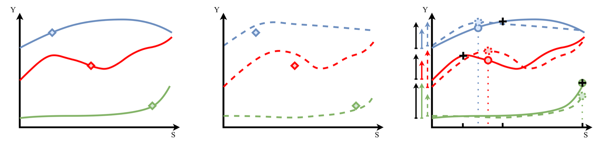
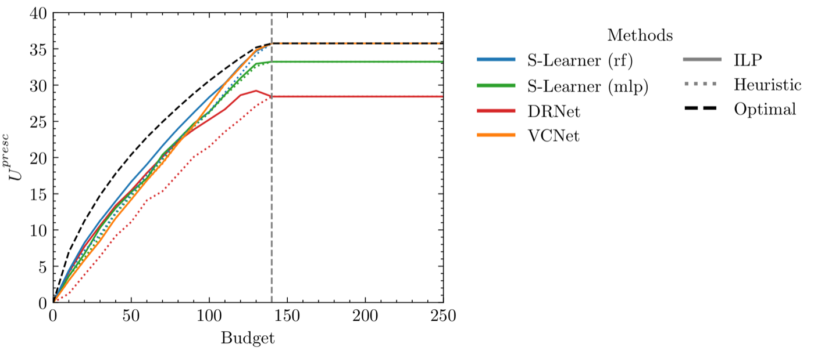
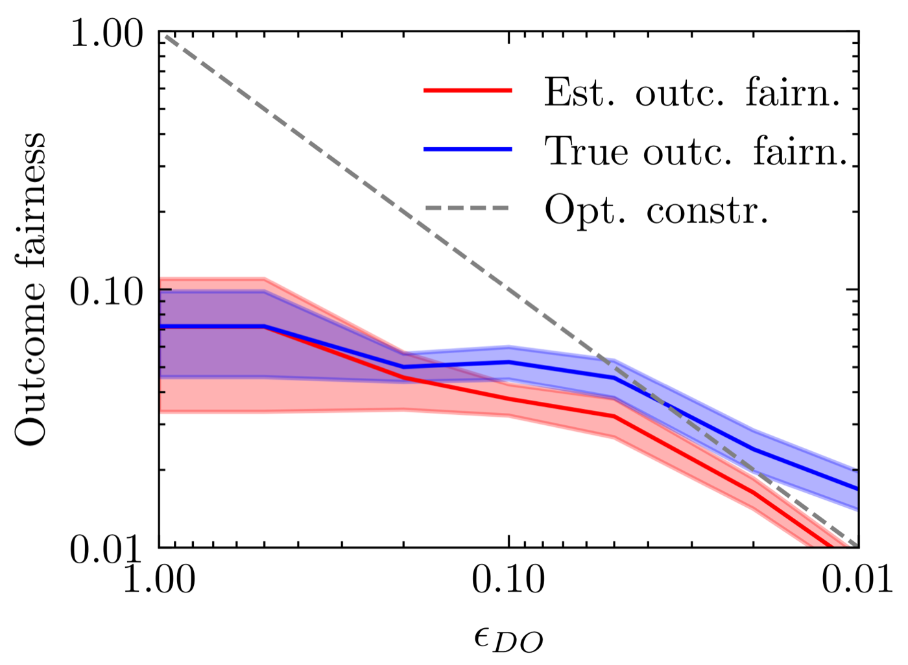
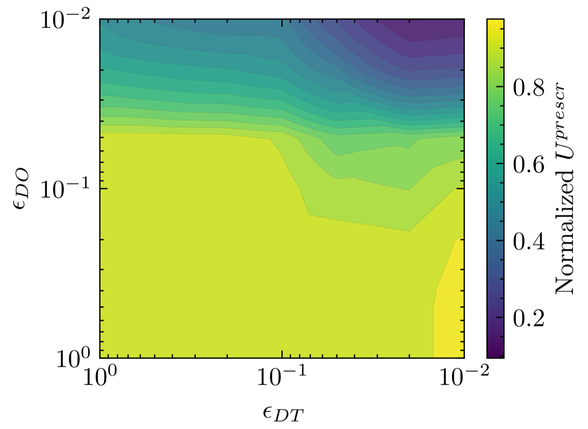
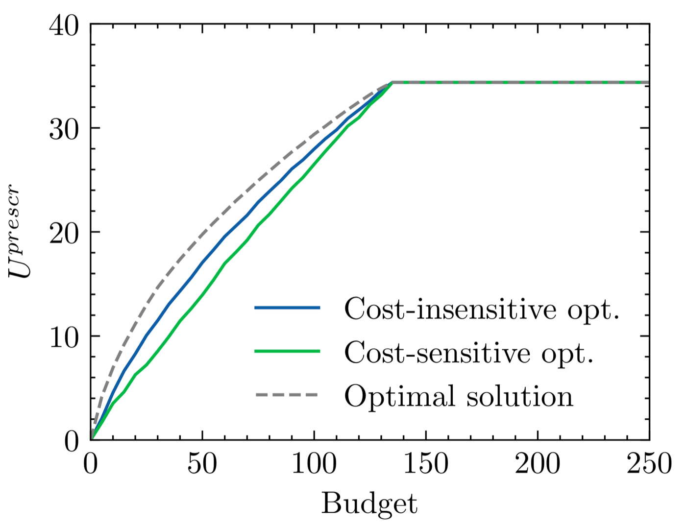
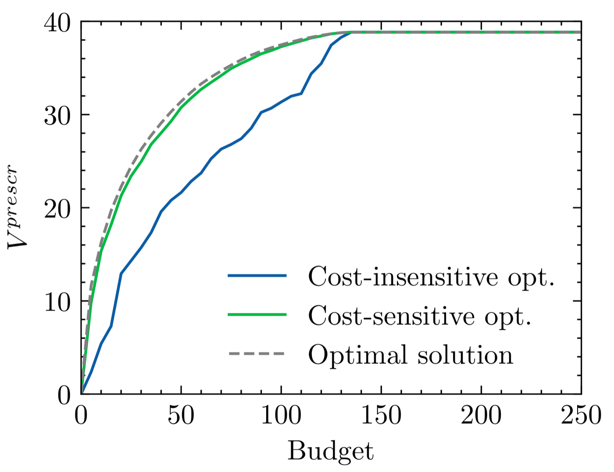

- 1 人に 1 つの投与量推定した用量反応曲線を 10 段階に区切り、予算の範囲で各人に投与量を 1 つずつ選ぶ ILP として割当てを解く。
- MISE 0.044 でも AUUC は 0.829曲線の推定誤差が最も小さい S-Learner (mlp) より、誤差が最も大きい S-Learner (rf)（MISE 0.060）のほうが、予算 140 での割当ての質が高かった（0.892、Table 3）。
- 予算 140 前後で頭打ち効果が投与量に対して単調でないため、それ以上予算を増やしても、処置した結果の価値は増えなかった。
実務の処置には「するか、しないか」ではなく「どれだけするか」を決めるものが多い
二値の処置を前提にしたアップリフトモデリングでは、まず条件付き平均処置効果（CATE）を推定し、次に推定値の大きい順に並べて、予算が尽きるまで上位 \(k\) 人に処置する。論文はこの二段の流れを predict-then-optimize と呼ぶ。
ところが実際の施策には、融資の金利、薬の量、研修の時間、保守の頻度のように、処置の量を連続的に選べるものが多い（論文 Table 1）。量の違いで効果が変わるなら、量まで細かく決めたほうが効果的かつ効率的に配れる可能性がある。個人ごとの用量反応（CADR）を推定する研究は増えているが、論文によれば、それらは推定と最適な投与量の探索が中心で、予算などの制約がある割当ての問題はほとんど扱っていない。
論文はまず、アップリフトモデリングを「制約のもとで、処置による累積のアップリフトから決まる総便益を最大にするよう処置を割り当てる方法の総称」と定義する。処置効果の推定はその中の一つの部品という位置づけになる。そのうえで、連続値の処置に対する predict-then-optimize の枠組みを提案する。
個人ごとの用量反応曲線を推定し、10 段階の投与量から 1 つを選ぶ問題に置き換える
各個体 \(i\) について特徴量 \(\mathbf{x}_i\)、投与量 \(s_i \in [0,1]\)、結果 \(y_i \in [0,1]\) を観測する。用量反応 CADR と、投与量 0 との差である用量効果 CADE を次のように定める。
予測の段では、一致性・無視可能性・重なりの 3 つの仮定のもとで、観察データから \(\hat\mu\) を学習する。最適化の段では、推定した曲線を \(\delta\) 個の区間に区切り、各人の候補の投与量ごとの CADE を並べたベクトル \(\hat{\boldsymbol\tau}(\mathbf{x}_i)\) を入力にする。費用 \(c_{i,d}\) は簡単のため投与量に比例すると置く（投与量 0.2 なら費用 0.2）。この費用の置き方は差し替えられると論文は述べている。
評価のために 3 種類の方策の価値を区別する。推定した CADE で割り当てて推定値で測る期待値 \(V^{exp}\)、推定値で割り当てて真の CADE で測る処方値 \(V^{presc}\)、真の CADE で割り当てて測る最適値 \(V^{opt}\) である。実際に得られるのは処方値で、最適値との差が後悔（regret）になる。半合成データでは真の曲線が分かるので、処方値と最適値を計算できる。
投与量の割当てを整数線形計画として解き、公平性の制約も同じ式に加える
処置が二値で費用が同じなら、この問題はナップザック問題の一例で、効果の大きい順に並べて予算まで配る方法が使える。投与量を選べるようになると選択肢が広がり、順に並べるだけでは足りない。論文は個体 \(i\) に投与量 \(d\) を割り当てるかを表す 0–1 変数 \(\pi_{i,d}\) を使い、次の ILP として定式化する。
\(b_i\) は個体ごとの便益で、全員 1 とすれば累積のアップリフト \(U\) を最大にする問題になる。投与量 0 も選択肢に含まれるので、「処置しない」も 1 つの投与量として扱われる。公平性については、二値の保護属性 \(A\) で分けた 2 群について、平均投与量の比を \(1\pm\epsilon_{DT}\) の範囲に収める割当ての公平性と、推定した効果の平均の比を \(1\pm\epsilon_{DO}\) の範囲に収める結果の公平性を、線形の制約として加える。\(\epsilon = 0\) なら 2 群を完全にそろえ、\(\epsilon = 1\) なら制約を外すことになる。
予測モデルには手を加えないので、制約や目的関数を変えても学習し直す必要はない。論文はこれを、予測と最適化を一体で学習する decision-focused learning に対する利点として挙げている。比較用のヒューリスティックとしては、各人の推定 CADE が最大になる投与量を選び、その効果の大きい順に予算が尽きるまで割り当てる方法を使う。

IHDP をもとにした半合成データで、4 つの推定器と 3 つの実験を比べた
データは乳児の健康と発達のプログラム IHDP（747 件、25 変数）で、投与量と結果は VCNet の論文（Nie ら）にならって人工的に生成した。結果は投与量に対して単調でなく、\(\sin(3\pi t)\) を含む式で作られる。投与量の区間数は \(\delta = 10\) に固定した。区間を細かくしても \(U^{presc}\) の改善はすぐ頭打ちになる一方、計算時間は増え続けたためである（論文付録）。
CADR の推定器は、ランダムフォレストを使う S-Learner (rf)、MLP を使う S-Learner (mlp)、DRNet、VCNet の 4 つである。それぞれ 5 分割交差検証のグリッド探索で、事実の結果に対する MSE が最小のハイパーパラメータを選んだ。ILP は Gurobi 11.0 で解き、どの実験でも最適解に収束したことを確認したと論文は述べている。
このページの数値と図は arXiv v2（2025 年 5 月 20 日）による。EJOR 掲載版（330 巻 1 号、230–244 ページ、2026 年 4 月）の本文は自動取得できなかったため、照合していない。
曲線の推定誤差が小さい推定器が、割当てでも良いとは限らなかった
実験 1 では費用の違いも公平性も入れず、予算を少しずつ増やして \(U^{presc}\) を測った。Table 3 の AUUC は真の曲線で割り当てた最適解を 1 として正規化している。予測の段の指標 MISE が最も小さいのは S-Learner (mlp)（0.044）、次いで DRNet（0.049）だった。一方、予算 140 までの AUUC を ILP で比べると、最も高いのは MISE が最も大きい S-Learner (rf)（0.892）で、DRNet は 0.799 と最も低かった。予算 250 まででも、S-Learner (rf) が 0.951 で最も高い。
論文はこの食い違いを、曲線のどこで誤差が出るかの違いで説明している。S-Learner (rf) は投与量 0.4〜0.6 の推定が粗いが、そこは効果が小さくどのみち選ばれないので、割当てにはほとんど響かない。DRNet は全体の誤差は小さいものの、真の曲線が急に下がる 0.9〜1.0 の区間を捉えきれていない。精度の高い予測が最良の意思決定につながるとは限らない、というのが論文の見方である。
どの推定器でも、ILP の AUUC はヒューリスティック以上だった。また、二値の処置で上位から配る場合と違い、予算 140 前後で曲線が平らになる。効果が投与量に対して単調でなく、それ以上投与するとかえって効果が下がる（過剰な処置になる）ためである。そこから先は、ヒューリスティックと ILP が同じ解に行き着く。ヒューリスティックは問題の規模が大きくなっても速いが、公平性のような追加の制約は入れられない。ILP は規模とともに計算時間が急に増える（論文付録）。

公平性の制約を厳しくすると価値は下がり、結果の公平性は推定値の上でしか保証されない
実験 2 では推定器を S-Learner (rf) に固定し、2 つの公平性の制約の強さを変えた。投与量は決定そのものなので、割当ての公平性は \(\epsilon_{DT}\) で狙ったとおりに調整できる。これに対して結果の公平性は、推定した CADE の上で制約するため、\(\epsilon_{DO}\) を厳しくしても真の CADE で測った群間の差は推定値ほど小さくならなかった（図 4 左）。論文は、それでも期待される結果に制約をかけるのは、群ごとの恩恵を見積もる最善の手がかりとして筋の通った設計だと述べている。
価値との関係では、どちらの制約も厳しくするほど \(U^{presc}\) は下がる。結果の制約がなければ、割当ての制約はほとんど価値を損なわずに厳しくできた。一方、結果の制約を厳しくすると価値が下がり、割当ての制約も厳しいときに特に大きく下がった（図 4 右）。データ生成のパラメータ \(\gamma\) を大きくして 2 群の真の平均処置効果の差を広げると、緩めの制約でも価値が大きく下がるようになった（論文 Fig. 6）。


便益を目的関数に入れると、便益で測った価値は特に予算が少ないときに高くなった
実験 3 では、目的関数に個体ごとの便益 \(b_i\) を入れた場合（費用を考慮）と入れない場合（アップリフトだけ）を比べた。便益で重みづけした価値 \(V^{presc}\) で測ると、費用を考慮した方策が、特に予算が少ない範囲で上回った。逆に、重みづけしないアップリフト \(U^{presc}\) で測ると、アップリフトだけを最大にした方策のほうが上になる。論文は最適化の目的を意思決定の本当の目的にそろえる必要があるとまとめている。論文によれば、費用を考慮した方策は便益と費用の比が高い個体を優先し、アップリフトが大きくても便益の小さい人には処置しないことがある。
論文本文はこの実験で個体ごとの費用と便益を考えるとしているが、具体的な与え方は書いていない。問題設定の節では、費用は投与量に比例すると置いている（解説者の注）。


限界として論文は、ILP は規模が大きくなると解きにくいこと、費用を確定値として扱い不確実な費用は扱わないこと、一度きりの処置に限ること、公平性は群単位だけであること、データと生成過程が 1 種類だけであることを挙げている。
予算を ILP の制約として明示し、投与量の選択肢つきナップザック問題を厳密に解く
この論文が推定するのは、個体ごとの用量反応曲線 \(\hat\mu(s,\mathbf{x})\) と、そこから得る投与量ごとの効果 \(\hat\tau_s(\mathbf{x})\) である。推定器は既存のもの（S-Learner、DRNet、VCNet）をそのまま使い、新しい推定法は提案していない。処置は連続値の投与量で、最適化では 0 を含む 10 段階に区切る。
費用は確定値の行列 \(c_{i,d}\) として扱い、実験では投与量に比例すると置く。便益 \(b_i\) は効果に掛ける重みとして入る。予算は総費用 \(\sum_{i,d}\pi_{i,d}c_{i,d} \le B\) という明示的な制約で、公平性などの追加の制約と一緒に ILP で厳密に解く。
処置が二値で費用が同じなら、この問題は 0–1 ナップザック問題になり、論文もアップリフトの大きい順に予算まで配る方法を妥当なヒューリスティックとして挙げている。投与量を選べる場合は、各個体からちょうど 1 つの選択肢を選ぶ多肢選択ナップザック問題の形をしている。その連続緩和は、個体ごとの（費用, 効果）の点の上側凸包に沿って、追加の効果 ÷ 追加の費用の大きい順に投与量を一段ずつ上げていく貪欲法で解ける。二値の場合に ROI（効果 ÷ 費用）の順に配るのは、その特別な場合にあたる（解説者の注）。論文はこの緩和や比の順位は使わず、整数解を ILP で直接求めている。比較に使ったヒューリスティックも、効果が最大になる投与量を固定したうえで効果の大きい順に並べるもので、効果 ÷ 費用の順ではない。
@article{devos2026uplift,
title = {Uplift modeling with continuous treatments: A predict-then-optimize approach},
author = {De Vos, Simon and Bockel-Rickermann, Christopher and Lessmann, Stefan and Verbeke, Wouter},
journal = {European Journal of Operational Research},
volume = {330},
number = {1},
pages = {230--244},
year = {2026},
doi = {10.1016/j.ejor.2025.10.025}
}